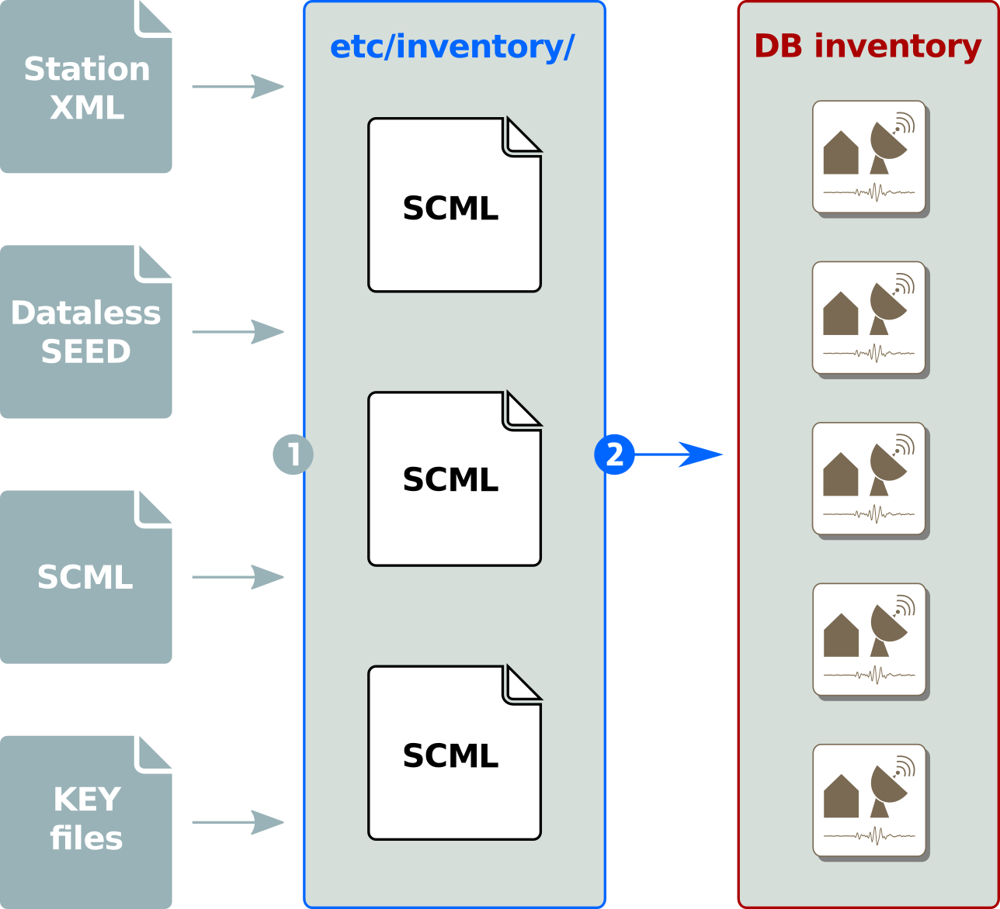

Inventory¶
Scope¶
This chapter describes the concept of inventories.
Overview¶
In SeisComP the term inventory refers to the meta data of data recording stations. Many SeisComP applications require inventory information to operate correctly. The inventory will be read from the database by default. To insert or update the inventory in the database, this information needs to be created or downloaded and converted. The following sections will describe the process of populating the database and how applications get access to it. All SeisComP applications work the the internal inventory format also known as SCML.
The inventory shall contain all meta data describing the full recording system and the pre-processing of the raw data stream provided to the data processing modules using the RecordStream. Inventories should be always complete w.r.t the processed data streams, correct and up-to-date. Beside network, station, location and stream information they must include the full sensor and datalogger responses.
Older version used key files to configure available networks and stations. Because the support of response meta-data was very limited, tools were build to add this functionality. Since the release of Seattle the concept of key files for station meta-data has been completely removed from the system. Now SeisComP only handles station meta-data in its own XML format called inventory ML. The task of supporting old key files, dataless SEED and other formats has been out-sourced to external applications. The inventory synchronization is a two-stage process:
Convert external formats into inventory ML
Synchronize inventory pool with the database: merged all inventory files and synchronize with the database using seiscomp update-config.

Inventory synchronization as a two-stage process¶
All station meta-data are stored in etc/inventory
and can be organized as needed. Either one file per network, a file containing the complete inventory
or one file for all instruments and one file per station. The update script
scinv sync
loads the existing inventory from the database and merges each file in etc/inventory.
Finally it removes all unreferenced
objects and sends all updates to the database.
The SeisComP configuration does not deal with station meta-data anymore. It only configures parameters for modules and module-station associations. The management of the inventory can and should be handled by external tools, e.g. SMP 1.
The SeisComP documentation describes the data model including the inventory.
Inventory format¶
A typical inventory file in SCML looks like this:
<?xml version="1.0" encoding="UTF-8"?>
<seiscomp xmlns="http://geofon.gfz-potsdam.de/ns/seiscomp-schema/0.11" version="0.11">
<Inventory>
<sensor>...
<datalogger>...
<network>...
</Inventory>
</seiscomp>
The version attribute of the seiscomp tag represents the schema version of
the SeisComP data model which is consistent with the database schema version
and the version of all other representations.
Inventories must be provided to SeisComP in XML files in SCML format. A convenient way to generate clean and correct inventory files in SCML format is SMP 1. Tools are provided to convert from other formats:
arclink2inv
Adding/updating inventory¶
To add inventory information to the SeisComP database one either has to write directly to the database with custom script (not recommended) or place SC ML files under etc/inventory. The service to import all data in that directory can be called with
$ seiscomp update-config inventory
This command runs scinv finally. scinv merges all XML files and synchronizes the merged local inventory tree with the database. That is a rather complex process and for more information it is recommended to study the source code of scinv. The bottom line is that inventory data is created from SC ML files.
Because nobody will ever create such XML files by hand, tools are necessary. A quite popular tools is the online station management portal SMP 1. This tool will output SeisComP XML directly.
Another source is the FDSN station webservice. If the SeisComP implementation is being run then the SeisComP XML format can be requested directly as an extension. Otherwise FDSN StationXML will be provided. That need to be converted with either fdsnxml2inv or import_inv. The latter is a more versatile application that also supports several import formats.
$ import_inv fdsnxml download-1234.xml
This will automatically place the output SC ML file in etc/inventory.
seiscomp update-config inventory must be called afterwards to synchronize
the changes with the database. If scconfig is being used then either the
Sync button of the Inventory panel or the Update configuration button of
the System panel must pressed.
Summary
In order to populate the database with inventory information, the following steps have to be performed:
Convert existing station meta data formats to SC ML
Place all SC ML files at
etc/inventoryRun
seiscomp update-configorseiscomp update-config inventory
Reading inventory¶
Application usually connect to the database and read the necessary inventory information. An application can decide whether it requires full response information (sensor and datalogger response functions) or just channel information (without instrument descriptions). The latter performs faster and some applications do not full instrument information.
An application does not require special configuration to read inventory information. A database connection is enough and it comes usually along with the handshake message of the messaging server.
There are cases when an application should be run without a database connection
but requires inventory information, particularly in combination with the
--ep command line argument. To direct an application to an inventory XML file
(again in SC ML format), --inventory-db must be used:
$ myapp --inventory-db inv.xml
That will completely bypass the database (even if used for event information) for reading inventory information. The file inv.xml can be created from the database using scxmldump.